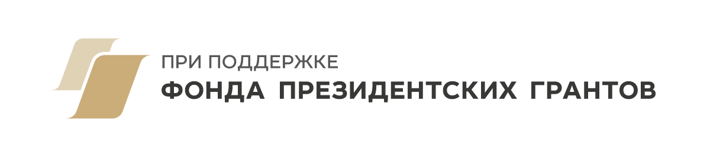

«НФ» — это известное в узких кругах мероприятие для всех, кто занимается развитием территорий. Точка встречи без пиджаков для предпринимателей, урбанистов, представителей градообразующих компаний, авторов социокультурных проектов и других единомышленников. На юбилейном неформальном форуме будем отвечать на вопрос, как сделать так, чтобы территория зарабатывала.
НФ проводит команда проекта «Продюсер города» — во многом выросшего на практиках Агентства развития территорий 1732. Вместо станков и металла «на Заводе» в Сысерти мы «выпускаем» идеи: наполняем пространство креативом и превращаем его в место притяжения и вдохновения. Мы продюсируем малый город на Урале, запускаем социокультурные проекты и создаём среду, которая вдохновляет и привлекает гостей со всей страны.
С 2022 года мы собираем НФ — единственный неформальный экспертный форум по развитию территорий. Здесь встречаются лидеры разных направлений, чтобы обменяться опытом, обсудить актуальные вызовы и выстроить доверительные связи. У нас нет формальных панелей — только открытый, равный диалог экспертов в максимально комфортной среде.
В 2026 году — на юбилейный НФ — зовём в гости в Сысерть, туда, где всё начиналось. А еще событие впервые поддержал Фонд президентских грантов.

В прошлые сезоны мы собирали модель продюсера города, учились строить фандрайзинг, работать с грантами и эндаументом. Сейчас — время разбрасывать камни: разбираемся, как продюсер территории может зарабатывать, выстраивая партнёрства с бизнесом, конвертируя пиар в инвестиции и находя новые модели устойчивой экономики территории.
Разберём реальный кейс — саму Сысерть, глазами продюсера. И будем обсуждать все инструменты не в теории и на бумаге, а на основе реального города.
Обсудим границу между продюсером территории и девелопером. А также две рельсы, на которых «едет» продюсер города.
Соберём инструменты и модели заработка, которые можно унести с собой. Никаких лекций и выученных выступлений — событие пройдет в формате хакатона.
Встретимся с теми, кто не только рассуждает, а делает — с бизнесом, инвесторами, экспертами.
Пятница–воскресенье, три дня рабочей программы.
Креативный кластер «На Заводе».
Отберём 10–30 участников.
С нас — проживание, питание и программа. С вас — добраться до Сысерти и привезти с собой свой опыт и энергию. Для всех, кто прошёл отбор, участие бесплатное.
Формат разработки и реализации рабочей программы предполагает вовлечённость каждого участника. Поэтому мы проводим отбор — нам важно собрать по-настоящему увлечённых и заинтересованных людей, идущих к общей цели.
Рабочая программа — это полдела. Вторая половина НФ — люди, с которыми хочется остаться на связи, и форматы, в которых разговариваешь честнее, чем за круглым столом.
Вечерние посиделки без регламента и модератора — тут рождаются самые честные разговоры о территориях.
Питчим идеи на ходу — утренняя пробежка по Сысерти вместо собрания в переговорной.
Вместо круглого стола — плед и дискуссия без презентаций и тайминга.
Совместные ужины и завтраки — главное место, где завязываются партнёрства и дружба.
В 2026 году встречаемся уже в пятый раз. За эти годы через НФ прошёл круг агентов развития территорий со всей России — мы искали пути для сотрудничества и коллабораций, не теряли нити связи. Чаты первых сезонов до сих пор остаются живыми.
Видео: участники прошлого НФ — о том, кто такой продюсер города
Не спикеры и не эксперты на сцене — люди, с которыми мы уже прошли не один сезон НФ и держим связь.
И ещё десятки людей нашего комьюнити — продюсеры городов, партнёры и друзья форума.
Любой, кто впрягается в развитие территорий и хочет территорию, которая зарабатывает, а не только тратит. Продюсеры городов, представители фондов, бизнеса, муниципалитетов — и все, кто не боится слова «неформальный» в названии. Главное — не равнодушие к теме — остальное обсудим на месте.
Нет, и это не подвох. Если вы прошли отбор — мы берём на себя проживание, питание и всю программу, включая костёр и хорошее настроение. Ваша задача — привезти себя и идеи.
По традиции — с нас организация всего на месте, а с вас — добраться до города. Можете дойти пешком, доехать на велике, арендовать вертолёт, скооперироваться с другими участниками и приехать на пати-басе с диско-шаром (будем завидовать, честно). Короче — добирайтесь как хотите, главное будьте в Сысерти 4–6 сентября — мы встретим, накормим, напоим.
В течение недели после дедлайна 1 августа придёт письмо. Никакой магии — просто мы быстро читаем и не любим держать в неведении.
10–30 — не больше. Мы не гонимся за цифрами и не зовём всех подряд — чем меньше народу, тем больше доверия и костра на всех хватит.